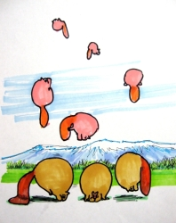

This page has usage examples for the following words:

acute eruptive infectious (contagious) disease
急性発疹性伝染病 きゅうせいほっしんせいでんせんびょう
aftereffects 後遺症 こういしょう
herpes ヘルペス （ハーピーズ）
latency 潜伏期 せんぷくき
measles はしか
pus 膿 うみ
rash, eruption 発疹 はっしん
rubella, German measles 風疹 ふうしん
scab かさぶた
scar 瘢痕 はんこん
virus ウイルス（ヴァイラス）
varicella, chickenpox, water pox 水疱瘡（水痘） みずぼうそう（すいとう）
My face and head became itchy and then rashes appeared all over my body.
顔や頭がかゆくなって、身体中にボコボコと発疹が出てきました。
かおやあたまがかゆくなって、からだじゅうにボコボコとはっしんがでてきました。
I never had chickenpox as a child.
小さい時に水疱瘡にかかっていません。
ちいさいときに みずぼうそうにかかっていません。
Is this disease contagious to my family members?
この病気は家族の者にうつりますか。
このびょうきは かぞくのものにうつりますか。
I have a raised rash and pus comes out of it.
大きな発疹の中から膿がでてきます。
おおきなはっしんのなかからうみがでてきます。
Some rashes are dried and scabbed. Can I peel them off?
乾燥してかさぶたになってきたものは、指ではがしてもいいですか。
かんそうしてかさぶたになってきたものは、ゆびではがしてもいいですか。
Don’t they become scars?
あとに残りませんか。
あとにのこりませんか。
I heard that chickenpox may affect reproductive organs. Is that true?
生殖器官に後遺症が残る可能性があるということを聞きましたが大丈夫でしょうか。
せいしょくきかんにこういしょうがのこる かのうせいがあるということをききましたが だいじょうぶでしょうか。
Do I have any aftereffects in my internal argans?
内臓に何か後遺症が残っていませんか。
ないぞうに なにかこういしょうがのこっていませんか。

A conversation between a patient and a doctor about
varicella, chickenpox, water pox
Patient:
I am a 27-year-old single woman. Recently, I contracted chickenpox. I thought that chickenpox was a child’s disease. Obviously, I did not have it in my childhood. Fever and rash gave me a psychological shock. Please explain the process, from the latency, onset to cure, and aftereffects on skin and internal organs.
２７才の独身女性です。最近、みずぼうそう（水疱瘡）にかかってしまいました。水疱瘡は、幼児期にかかる病気だと思っていましたが、私は子供の頃にかかっていなかったようです。発熱と発疹のせいで精神的にもショックでした。潜伏期から、発病、治癒するまでの経過、皮膚や内臓器官への後遺症、などについても説明して下さい。
Doctor:
Varicella, the scientific name of chickenpox, is a contagious disease caused by a virus called varicella-zoster virus (VZV). Approximately 90% of patients are younger than 9 years old. The disease spreads through breathing, i. e., cough and sneeze, or direct contact with open wounds. The VZV also causes herpes zoster. The “ zoster” means band and “herpes” means blister. Hence, herpes zoster is an inflammatory disease with many small water blisters appearing on the skin surface. The latency (duration between contracting virus and the onset) of chickenpox is 10 to 11 days. Blisters appear first, followed by cold-like symptoms, headache and fever. Whereas children usually get well in 7 to 10 days, adults may develop pneumonia and encephalitis.
みずぼうそう（水疱瘡）、又は、水痘、チキンポックス (chickenpox) は、学名で varicellaと呼ばれ、varicella-zoster virus (VZV) というウィルスによっておこされる伝染性の病気です。この病気にかかる人の９割は９才以下の小児です。呼吸器を介して（咳、くしゃみ等）、或いは、開放性の傷口に、直接、接触することによってうつります。上記の VZV は帯状疱疹 (herpes zoster) もおこします。zoster は帯状のことで、herpes は疱疹（小水疹が集合して皮膚表面に発現する炎症性疾患）を意味します。チキンポックスの潜伏期（感染してから症状が現われるまでの期間）は１１～２０日で、まず水痘が現れて、続いて感冒様の症状、頭痛、発熱が出ます。小児では、普通、７～１０日で治癒しますが、成人では、時として、肺炎や脳炎の症状を引きおこすこともあります。
My two cents 一言おせっかい
Ever since vaccination has become a general knowledge, it appears that less attention is paid to once-feared childhood diseases. It may be a good idea to investigate the individual’s history of childhood diseases.
予防接種が行き渡るようになって以来、かつては恐れられていた小児期の病気に関して注意が払われなくなった傾向があります。この際、各自の小児期の病歴を調べておくのも良いでしょう。
[mi02]
| © 1995-2013 NACOS International Institute. All Rights Reserved. |